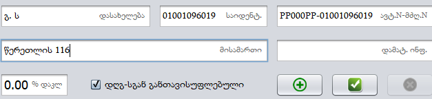

კლიენტები
კლიენტის ფანჯარა გვხვდება, როგორც სალაროს ფანჯარაში, ასევე გამოტანილია ცალკე მოდულად პროგრამის მთავარ მენიუში. ეს ფანჯარა საშუალებას გვაძლევს საჭიროების შემთხვევაში ავტვირთოთ ზედნადებები. ზედნადების ატვირთვა გვჭირდება შემდეგ შემთხვევებში:
შიდა გადაზიდვა:
როდესაც ჩვენი შპს-ს ერთი ფილიალიდან გადაგვაქვს მეორე ფილიალზე. ორივე უნდა იყოს ერთი და იგივე შპს, ერთი დასახელებითა და საიდენტიფიკაციო ნომრით, თუ გვაქვს ორი შპს მაგ. შპს სატესტო საიდ: 123456789 და შპს სატესტო1 საიდ:987654321 ეს ორი ერთმანეთისგან დამოუკიდებელი კომპანიებია მიუხედავად იმისა, რომ ორივე ერთი პირს ეკუთვნის, აქედან გამომდინარე თუ შპს სატესტო-დან ავტვირთავთ ზედნადებს შპს სატესტო1 ზე, ეს არ იქნება შიდა გადაზიდვა.
შიდა გადაზიდვა უნდა გავაკეთოთ პროგრამულად, ზედნადები უნდა აიტვირთოს პროგრამიდან. ამისთვის პირველ რიგში გავხსნათ პროგრამა მენეჯერის უფლების მქონე მომხმარებლით. გადავიდეთ რეალიზაციებში და გავატაროთ ის პროდუქციები რომლის გადატანაც გვინდა სხვა ფილიალში. ვინაიდან არის შიდა გადაზიდვა, ეს გატარება არ საჭიროებს ჩეკს რადგან რს ზე ისედაც ფიქსირდება ეს ყოველივე, ამიტომ უნდა გამოვრთოთ სალარო აპარატთან კავშირი რადგან ჩეკის გარეშე გადავიდეს პროგრამაში ეს გაყიდვა. ამისათვის დავაჭიროთ პარამეტრების ლოგოს და გამოტანილ მენიუში დავაჭიროთ , შემდეგ და ავირჩიოთ ნაღდი ან უნაღდო.
გავხსნათ სალაროს მოდული. სალაროს ფანჯარაში შესვლის დროს ეს რეალიზაცია არ გამოჩნდება, რადგან პროდუქცია გაყიდულია მენეჯერის მომხმარებლით, ამიტომ დავაჭიროთ მწვანე ისარს და მოვხსნათ მონიშვნა „მხოლოდ მოლარე“-ს, გამოჩნდება იუზერი რომლიდანაც გავატარეთ ასატვირთი პროდუქციები ავირჩიოთ კონკრეტული ჩეკი რომელშიც მოხდა ამ პროდუქციების გაყიდვა და სალაროშივე გადავიდეთ კლიენტების ფანჯარაში.
კლიენტის შექმნა:
როდესაც პირველად ვტვირთავთ ნებისმიერ კომპანიაზე ზედნადებს დაგვჭირდება რომ შევქმნათ კლიენტი. როდესაც ერთხელ შევქმნით კლიენტს მომავალში სხვა გაყიდვების ასატვირთად აღარ დაგვჭირდება ამ კლიენტის შექმნა უბრალოდ ავირჩევთ კლიენტს და დავაჭერთ phoTO კლიენტების ფანჯარაში უნდა დავამატოთ ის კლიენტი ვისაც ვუტვირთავთ ზედნადებს
შევავსოთ მოცემული უჯრები შესაბამისი ინფორმაციით.
ჩავწეროთ საიდენტიფიკაციო კოდი და დავაჭიროთ ენთერს კლავიატურაზე , ამის შემდეგ შპს-ს სახელი ავტომატურად ჩაიწერება დასახელების გრაფაში. ავტომობილის და მძღოლის ნომერში უნდა შევიყვანოთ ავტომობილის ნომერი - მძღოლის პირადი ნომერი, სურათზე ნაჩვენები ფორმატით. თუ ზედნადებში უნდა იყოს მითითებული „ტრანსპორტირების გარეშე“ ასეთ შემთხვევაში ჩავწეროთ 3 ტირე (---). შიდა გადაზიდვის შემთხვევაში აუცილებელია, რომ მითითებული იყოს მანქანის და მძღოლის ინფორმაცია. მისამართში შევიყვანოთ ტრანსპორტირების დასრულების ადგილი , ანუ ვისაც ავუტვირთავთ ზედნადებს იმ კომპანიის მისამართი. მოვნიშნოთ ითვალისწინებს თუ არა ეს გადაზიდვა დღგ-ს და დავაჭიროთ მწვანე პლიუსის ხატულას რის შემდეგაც დაემატება ახალი კლიენტი.
კლიენტების წაშლა არ არის შესაძლებელი ამიტომ თუ კლიენტს არასწორად შევქმნით, დავდგეთ კლიენტზე, ჩავასწოროთ ინფორმაცია და დავაჭიროთ - ჩასწორება.
კლიენტი დამატებულია, ახლა უნდა ავირჩიოთ კლიენტი(რომელ რეალიზაციასაც
ვუტვირთავთ უნდა იყოს მონიშნული, უნა იყოს ლურჯი ფერის.) დავაჭიროთ მარცხენა
ზედა კუთხეში
 ლოგოს,
გამოტანილ ფანჯარაში დავაჭიროთ ატვირთვა
ლოგოს,
გამოტანილ ფანჯარაში დავაჭიროთ ატვირთვა
გააქტიურება ავტომატურად არის მონიშნული და ნიშნავს, რომ როდესაც ზედნადების ატვირთვას დავაჭერთ ზედნადები გააქტიურდეს. თუ გვინდა რომ ზედნადები RS-ზე აიტვირთოს მაგრამ არ იყოს გააქტიურებული და იყოს „შენახულები“-ში მოვხსნათ გააქტიურების მონიშვნა და ისე დავაჭიროთ ატვირთვას.
მიყიდვა:
არის ხოლმე შემთხვევები როდესაც მომწოდებელი არ ტვირთავს დაბრუნების ზედნადებს ან და შესაძლოა შეიცვალოს შპს რის გამოც ვერ შევასრულებთ დაბრუნებას, იქიდან გამომდინარე, რომ გამოდის რომ შემოიტანა სხვა შპს-მ და გააქვს სხვა შპს-ს. სხვა სახის ზედნადებების ატვირთვის დროს პროდუქციას ვატარებდით რეალიზაციის მოდულიდან რადგან უნდა გატარებულიყო სარეალიზაციო ფასში, მისყიდვის შემთხვევაში მომწოდებელს ზედნადები უნდა ავტვირთოთ თვითღირებულებით ან თვითღირებულებაზე პროცენტული ნამატით, აქედან გამომდინარე გვიწევს ექსელი-ს დოკუმენტის შექმნა, სადაც შევიყვანთ ასატვირთი პროდუქციების შტრიხკოდებს, რაოდენობას და ფასს. იხილეთ სურათზე.
ეს დოკუმენტი უნდა შევინახოთ .xls გაფართოებით. ამისათვის დავაჭიროთ FILE შემდეგ Save as ავირჩიოთ Desktop, რადგან ჩვენ მთავარ სამუშაო დაფაზე მოხდეს ფაილის შექმნა, დავარქვათ სახელი და ფორმატებში ავირჩიოთ Excel 97-2003 Workbook (*.xls) დავაჭიროთ SAVE.
მენეჯერის იუზერით შევიდეთ რეალიზაციის ფანჯარაში დავაჭიროთ
 დავინახავთ ექსელი-ს ლოგოს, ჩვენი შექმნილი დოკუმენტი უნდა გადმოვათრიოთ
მაუსით და ჩავაგდოთ პროგრამაში ექსელი-ს ლოგოში. ექსელ-ში არსებული
პროდუქციები ავტომატურად გატარდება სალაროში, დავაჭიროთ
. შემდეგ
და გავყიდოთ პროდუქცია უნაღდო-ზე . ამის შემდეგ როგორც წინა მაგალითებში
ავტვირთოთ ზედნადები სალაროს ფანჯრიდან.
დავინახავთ ექსელი-ს ლოგოს, ჩვენი შექმნილი დოკუმენტი უნდა გადმოვათრიოთ
მაუსით და ჩავაგდოთ პროგრამაში ექსელი-ს ლოგოში. ექსელ-ში არსებული
პროდუქციები ავტომატურად გატარდება სალაროში, დავაჭიროთ
. შემდეგ
და გავყიდოთ პროდუქცია უნაღდო-ზე . ამის შემდეგ როგორც წინა მაგალითებში
ავტვირთოთ ზედნადები სალაროს ფანჯრიდან.
როდესაც რომელიმე შპს იყიდის ჩვენგან პროდუქციას შესაძლოა მოგვთხოვოს ზედნადების ატვირთვა. მსგავსი ზედნადების ატვირთვაც ანალოგიურად ხდება, უნდა გავატაროთ პროდუქცია, დავამატოთ კლიენტი(ვისაც ვუტვირთავთ ზედნადებს) მოვნიშნოთ ორივე , რასაც ვტვირთავთ და ვისაც ვუტვირთავთ, დავაჭიროთ ატვირთვა-ს.